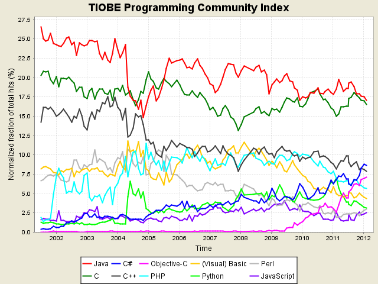

Язык программирования — формальная знаковая система, предназначенная для записи компьютерных программ. Язык программирования определяет набор лексических, синтаксических и семантических правил, задающих внешний вид программы и действия, которые выполнит исполнитель (компьютер) под ее управлением.
Со времени создания первых программируемых машин человечество придумало уже более восьми с половиной тысяч языков
программирования. Каждый год их число пополняется новыми. Некоторыми языками умеет пользоваться только небольшое число их собственных разработчиков, другие становятся известны миллионам людей. Профессиональные программисты иногда применяют в своей работе более десятка разнообразных языков программирования.
Создатели языков по-разному толкуют понятие язык программирования. К наиболее распространённым утверждениям, признаваемым большинством разработчиков, относятся следующие:
Функция: язык программирования предназначен для написания компьютерных программ, которые применяются для передачи компьютеру инструкций по выполнению того или иного вычислительного процесса и организации управления отдельными устройствами.
Задача: язык программирования отличается от естественных языков тем, что предназначен для передачи команд и данных от человека к компьютеру, в то время, как естественные языки используются для общения людей между собой. В принципе, можно обобщить определение «языков программирования» — это способ передачи команд, приказов, чёткого руководства к действию; тогда как человеческие языки служат также для обмена информацией.
Исполнение: язык программирования может использовать специальные конструкции для определения и манипулирования структурами данных и управления процессом вычислений.
